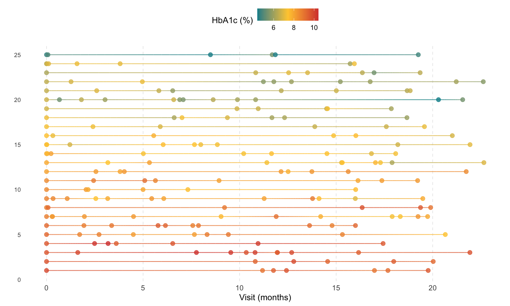
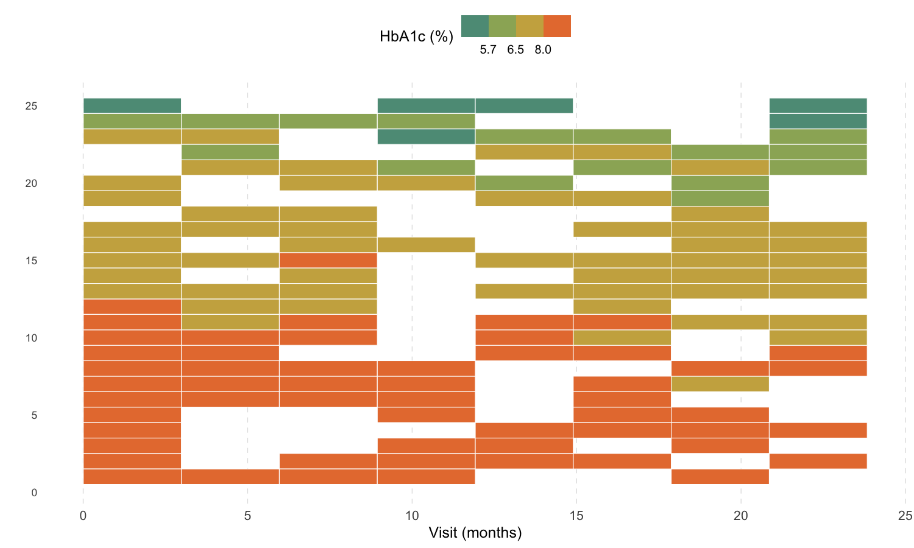
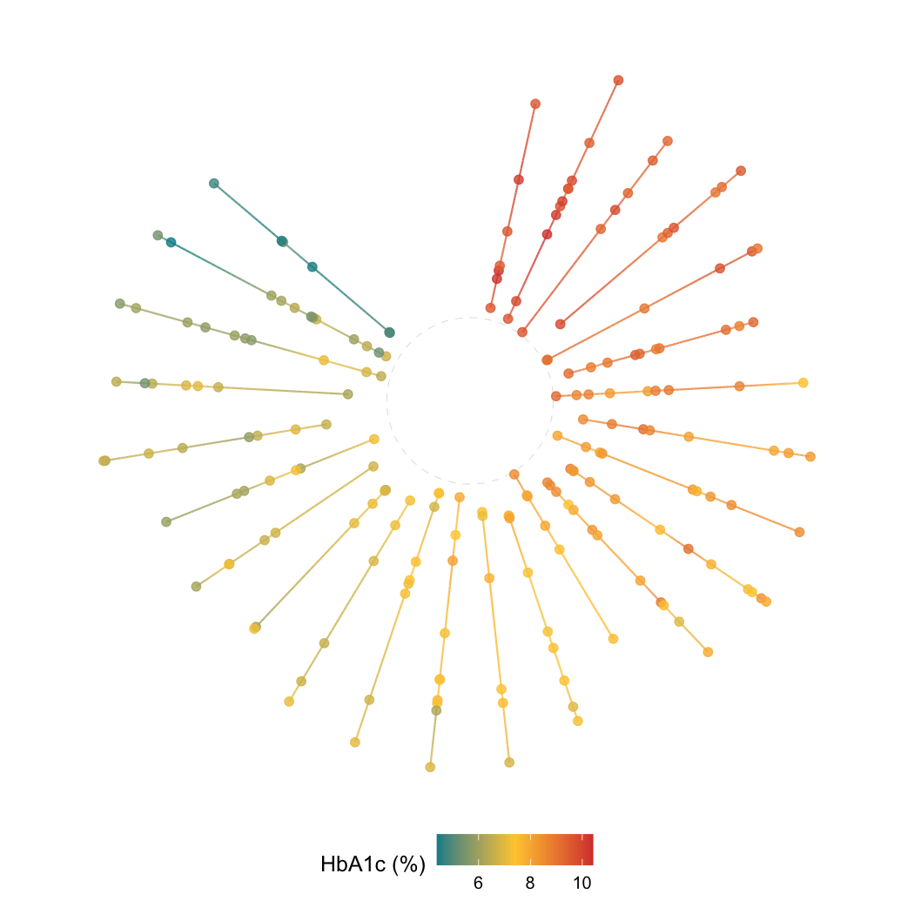
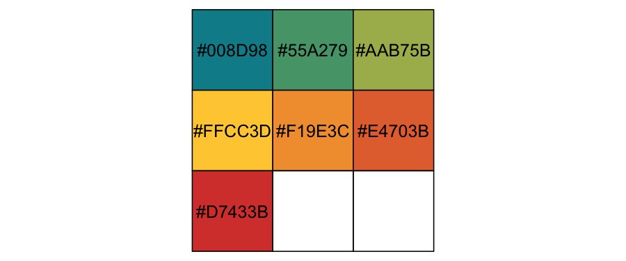

ggkodom is a ggplot2 extension for visualizing individual-level longitudinal trajectories. Each subject gets its own visual lane; measurements are encoded as a smooth color gradient. Three layout geoms cover different analytical needs:
| Geom | Best for |
|---|---|
geom_kodom_line() |
Irregular visit schedules; visible per-observation timing |
geom_kodom_heatmap() |
Large cohorts; aligned time-window summaries |
geom_kodom_circular() |
Compact population overview; the Kadam-flower aesthetic |
The package is named after the Kadam flower (Neolamarckia cadamba), whose radial spoke structure inspired the circular layout.
Quick start
library(ggkodom)
#> কদম গাছে উঠিয়া আছে গোলমেলে ডেটা
#> প্লট বানিয়ে সোজা করবে ggkodom-এর ব্যাটা!
#>
#> (English Translation: Messy data has climbed the Kodom tree, but ggkodom's lad will straighten it out with a plot!)
#> Welcome to ggkodom!
#> Version: 0.1.0
library(ggplot2)
#> Warning: package 'ggplot2' was built under R version 4.5.2
set.seed(42)
n_subjects <- 25
n_obs_per <- sample(6:12, n_subjects, replace = TRUE)
df <- do.call(rbind, lapply(seq_len(n_subjects), function(i) {
n <- n_obs_per[i]
base <- rnorm(1, mean = 7.5, sd = 1.2)
trend <- rnorm(1, mean = -0.02, sd = 0.01)
time <- sort(runif(n, 0, 24))
data.frame(
subject_id = sprintf("P%03d", i),
visit_month = time,
relative_month = time - min(time),
hba1c = pmax(4, base + trend * time + rnorm(n, sd = 0.4)),
arm = ifelse(i <= 12, "Treatment", "Control"),
stringsAsFactors = FALSE
)
}))Line plot
ggplot(df, aes(x = relative_month, id = subject_id, colour = hba1c)) +
geom_kodom_line(sort_by = "first") +
scale_colour_kodom(name = "HbA1c (%)") +
labs(x = "Visit (months)", y = "") +
theme_kodom()
Heatmap
ggplot(df, aes(x = visit_month, id = subject_id, fill = hba1c)) +
geom_kodom_heatmap(bins = 8, sort_by = "mean") +
scale_fill_kodom(
discretize = TRUE,
color_breaks = c(5.7, 6.5, 8),
name = "HbA1c (%)"
) +
labs(x = "Visit (months)", y = "") +
theme_kodom()
Circular
ggplot(df, aes(x = visit_month, id = subject_id, colour = hba1c)) +
geom_kodom_circular(sort_by = "mean", show_points = TRUE) +
scale_colour_kodom(name = "HbA1c (%)") +
coord_fixed() +
theme_kodom_circular() +
labs(title = "")
Key aesthetics
All three geoms share the same aesthetic contract:
-
x— time variable -
id— subject identifier (stat converts it to integer lane positions) -
colour/fill— measured value; drives the colour gradient and lane sorting -
size→ point markers only (geom_kodom_line/geom_kodom_circular) -
linewidth→ connecting path only -
alpha,shape,stroke,linetype— standard ggplot2 semantics
Because all geoms are native ggplot2 layers, they compose freely with facet_wrap(), scale_*(), theme(), and coord_*().
Colour palette
scales::show_col(kodom_colors(7))
Three anchors — teal #008D98, gold #FFCC3D, red #D7433B — interpolated via colorRampPalette. Pass discretize = TRUE and color_breaks to switch to solid clinical bands.
Learn more
-
vignette("kodom-lines")— full feature tour ofgeom_kodom_line(): point shapes, independentsize/linewidth, covariate encoding, faceting -
vignette("kodom-variants")—geom_kodom_heatmap()andgeom_kodom_circular()in depth: bin resolution, aggregation functions, gap/inner fractions, large-cohort use cases
Authors
Ayoushman Bhattacharya, Sayan Das, Subrata Pal, Subhrajyoty Roy. Developed as part of the WashU Datathon 2026.